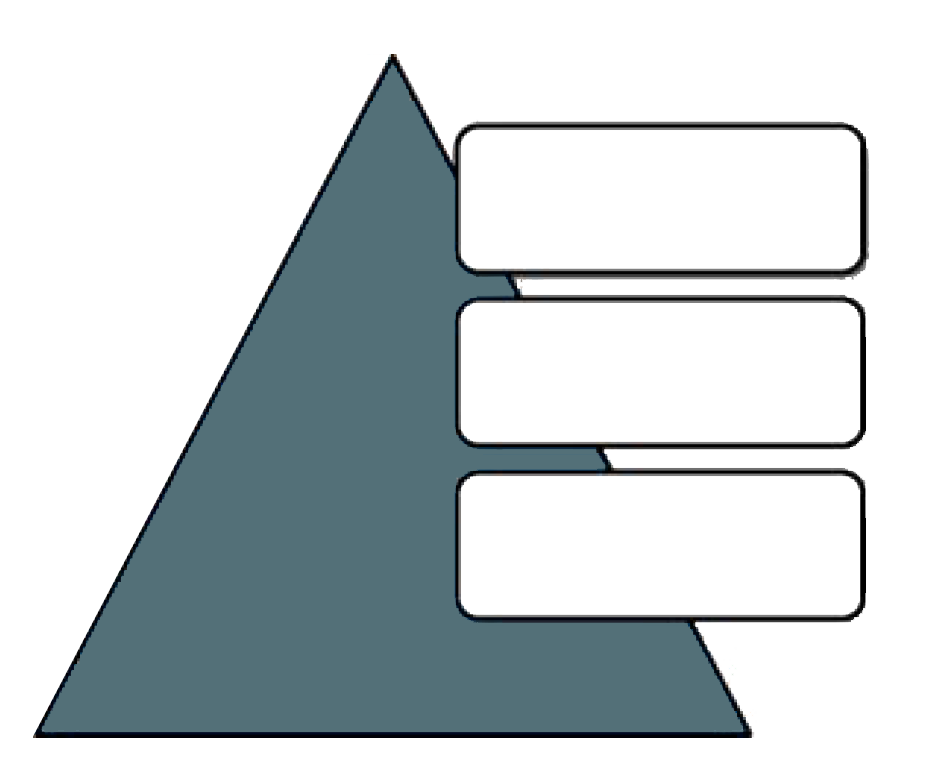
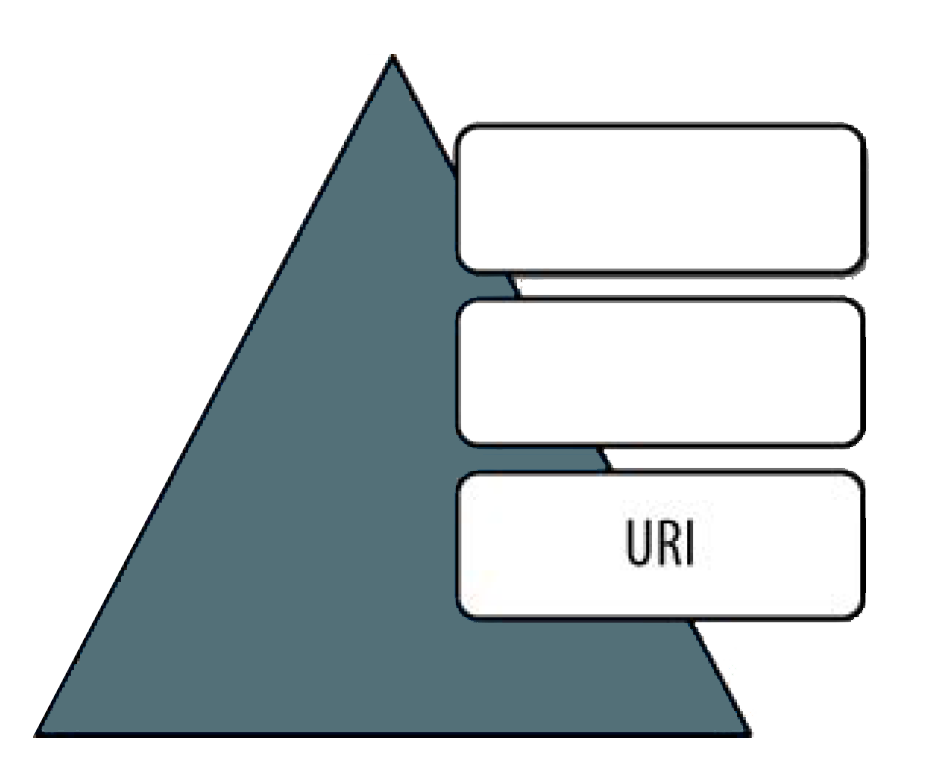
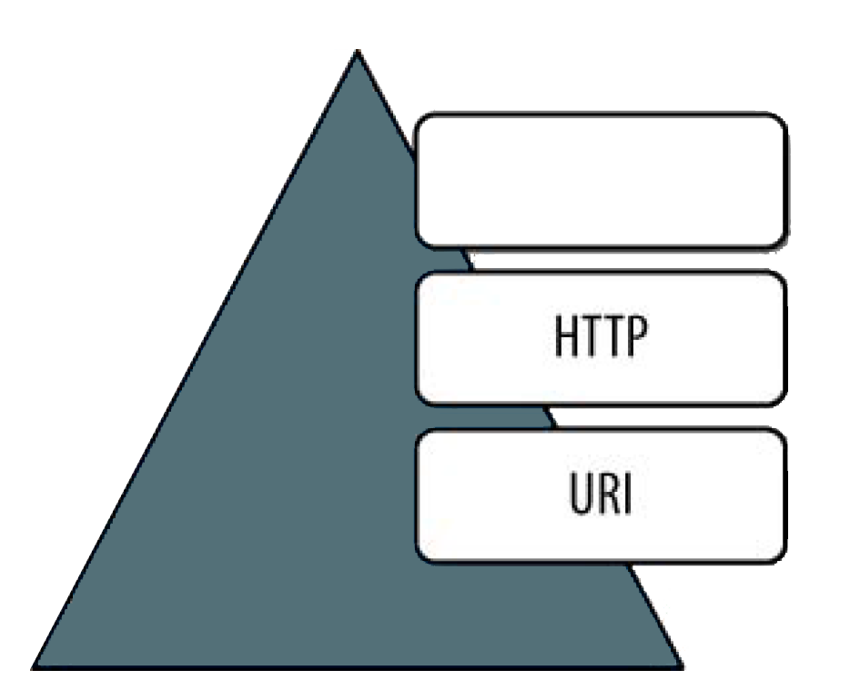
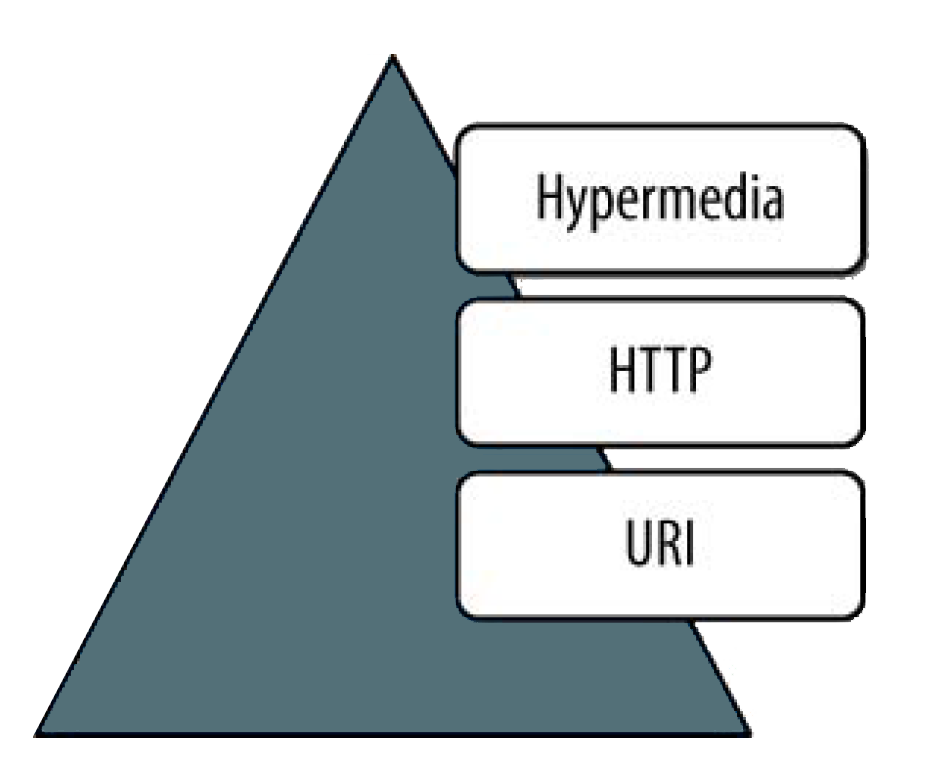

Web API
Navigation mit
Esc
,
→
und
↓
 ### [JohannesHoppe.de](http://www.johanneshoppe.de/)
## Ziele
1. Teil
* CRUD
✓
* Daten per jQuery
✓
* Debugging mit Fiddler
✓
* Data Annotations
✓
* Attribute Routing (Web API 2) NEU!
✓
*
(Asynchronous Requests)
## Ziele
2. Teil
* Fragen/Feedback aus Teil 1. * async * ActionFilterAttribute * Dependency Injection * Unit-Tests * API Anti-Patterns * RESTful Design
# Tools 
# Tools * Visual Studio 2012 * [» Visual Studio 2013 Preview](http://www.microsoft.com/visualstudio/eng/2013-downloads) * [» Fiddler](http://fiddler2.com/)
## API-Anti Patterns 
## API-Anti Patterns
zu viel
GET
und
POST
POST: post.php?get=parameter
DELETE
HTTP/1.1 200 (OK)
mit einer Fehlermeldung
HTTP/1.1 500 Internal Server Error
kein hypermedia
?
schlechte Dokumentation
[old Twitter](https://dev.twitter.com/docs/api/1)
# RESTful 
## Level 0: Pox
Richardson Maturity Model

## Level 0: Pox ```html contenteditable HTTP/1.1 200 OK Content-Type: application/soap+xml; charset=utf-8 _LT_?xml version="1.0"?_GT_ _LT_soap:Envelope xmlns:soap="http://www.w3.org/2001/12/soap-envelope" soap:encodingStyle="http://www.w3.org/2001/12/soap-encoding"_GT_ _LT_soap:Body xmlns:m="http://www.example.org/stock"_GT_ _LT_m:GetStockPriceResponse_GT_ _LT_m:Price_GT_34.5_LT_/m:Price_GT_ _LT_/m:GetStockPriceResponse_GT_ _LT_/soap:Body_GT_ _LT_/soap:Envelope_GT_ ```
## Level 1: Uri 
## Level 1: Uri ```txt GET /Home/GetAllNotes?limit=200_AMP_search=test ```
## Level 2: http
verbs & status codes

## Level 2: http
verbs & status codes
```txt GET PUT POST DELETE ```
## Level 3: hypermedia
H
ypermedia
A
s
T
he
E
ngine
Of
A
pplication
S
tate

## Downloads  ### [bit.ly/devMediaCode](http://bit.ly/devMediaCode)
# 12.09. [Webinar: jQuery 2013 - Teil 1](http://developer-media.de/portfolioentry/jquery-2013-teil-1/)
# Danke!
Created by
Johannes Hoppe
|
Print PDF
|
GitHub